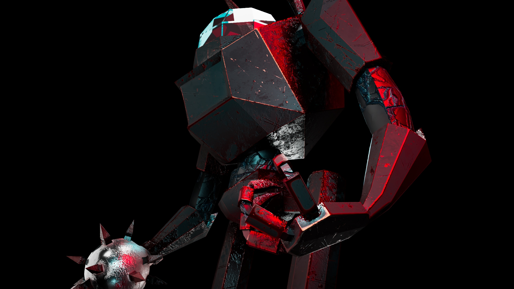
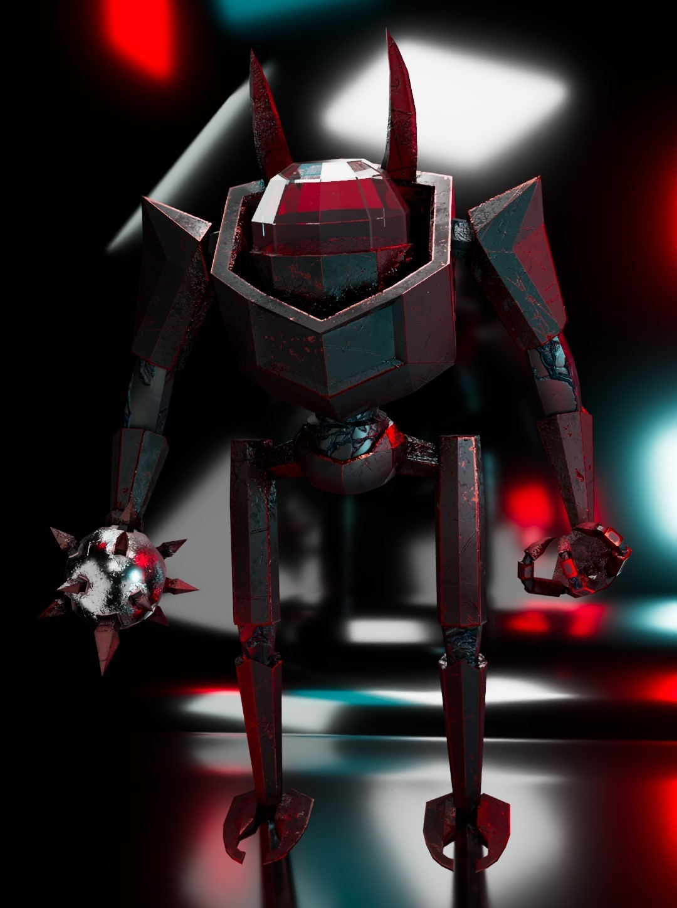
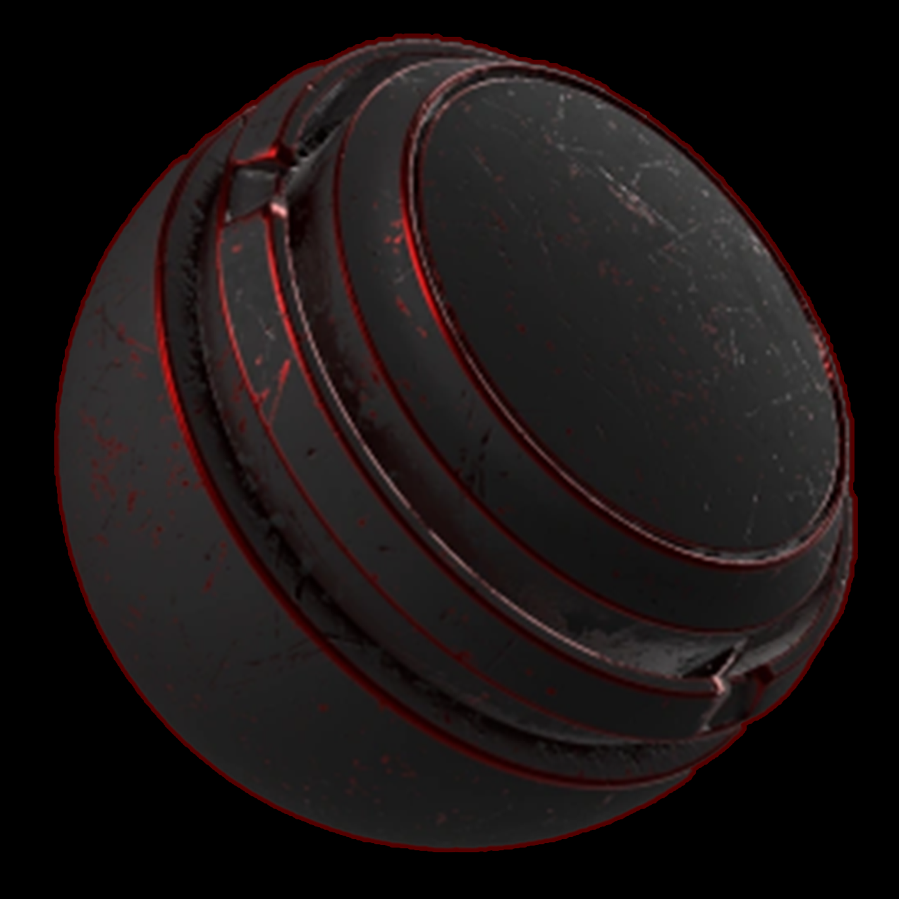

Hello! My name is Albie Tappenden, I’m a student and I studied for 2 years at a Level 3 Diploma in ‘Animation for Games and Media’, in which I went on to achieving a Merit in both years. I am a 3D Generalist but specialise in hard surface modelling like vehicles and forms of weaponry. Using my skills, I am now studying ‘Digital Media’ at The University West of England in Bristol. See below to view some of my work from this year!
3D Models this year:



P5.js Creative Projects:

Repetition
For my first piece, I have taken inspiration from the Hungarian-french artist Victor Vasarely
who specialized in creating art that tricked the eyes most commonly, but for this specific piece
i recreated a simplified version of his style by using coloured squares and circles inside them.
And how when the page is refreshed, each time the colours will be new.

Random
For my second, I was inspired by Sonia Delaunay, who was known for experimenting colours and shapes,
with repetition to create visually appealing patterns. In my work I used code to randomize circles
around the canvas as well as triangles with random rotation points. Again with my last piece my work
is made so that when refreshed, it shows a new unique version whilst keeping all the colours.

Contrast
And for my final, I came up with this one myself, I realized for my other pieces i used
randomization in colours but for this one i wanted to keep just 2 colours as well as keeping the
objects the same when the page was refreshed. I tried to look at an artist called Josef Albers for the
resizing of shapes but his stuff just didn't show off what I wanted to create.
Priniciples of 3D Projects:

3D Robot
description

Custom Smart-Material
description
How to Contact
Email: Albie3D@outlook.com
Art Station: @albietappenden
Instagram: @Albie.3D
Sketch Fab: @albietap42
Back to Top
P5.js Creative Projects:
Repetition
For my first piece, I have taken inspiration from the Hungarian-french artist Victor Vasarely who specialized in creating art that tricked the eyes most commonly, but for this specific piece i recreated a simplified version of his style by using coloured squares and circles inside them. And how when the page is refreshed, each time the colours will be new.
Random
For my second, I was inspired by Sonia Delaunay, who was known for experimenting colours and shapes, with repetition to create visually appealing patterns. In my work I used code to randomize circles around the canvas as well as triangles with random rotation points. Again with my last piece my work is made so that when refreshed, it shows a new unique version whilst keeping all the colours.
Contrast
And for my final, I came up with this one myself, I realized for my other pieces i used randomization in colours but for this one i wanted to keep just 2 colours as well as keeping the objects the same when the page was refreshed. I tried to look at an artist called Josef Albers for the resizing of shapes but his stuff just didn't show off what I wanted to create.
Priniciples of 3D Projects:
3D Robot
description
Custom Smart-Material
description
How to Contact
Email: Albie3D@outlook.com
Art Station: @albietappenden
Instagram: @Albie.3D
Sketch Fab: @albietap42
Back to Top